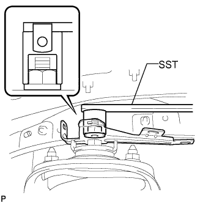

FRONT SHOCK ABSORBER > REMOVAL |
| 1. REMOVE FRONT WHEEL |
| 2. REMOVE LOWER FRONT BUMPER COVER |
Remove the clip, 5 bolts and lower front bumper cover.
| 3. REMOVE NO. 1 ENGINE UNDER COVER SUB-ASSEMBLY |
Remove the 4 bolts.
 |
Unhook the No. 1 engine under cover from the vehicle body as shown in the illustration.
| 4. REMOVE FRONT SUSPENSION MEMBER BRACE SUB-ASSEMBLY |
 |
Remove the 6 bolts and 2 member braces from the front frame assembly.
| 5. REMOVE FRONT STABILIZER END BRACKET |
 |
Remove the 4 bolts and 2 brackets from the lower arm.
| 6. REMOVE FRONT STABILIZER BAR |
 |
Remove the 4 bolts, 2 front stabilizer lower brackets and front stabilizer bar.
Remove the 2 front stabilizer link bushes and front stabilizer lower bracket bushes from the stabilizer bar front.
| 7. REMOVE FRONT SHOCK ABSORBER WITH COIL SPRING |
 |
Detach the 3 clamps and disconnect the connector.
Using a 4 mm hexagon wrench, remove the 2 bolts and absorber control actuator.
|  |
Using SST, remove the nut and bracket.
 |
Remove the bolt, nut and washer.
 |
Remove the 3 nuts on the top of the front shock absorber with coil spring.
Remove the front shock absorber with coil spring.